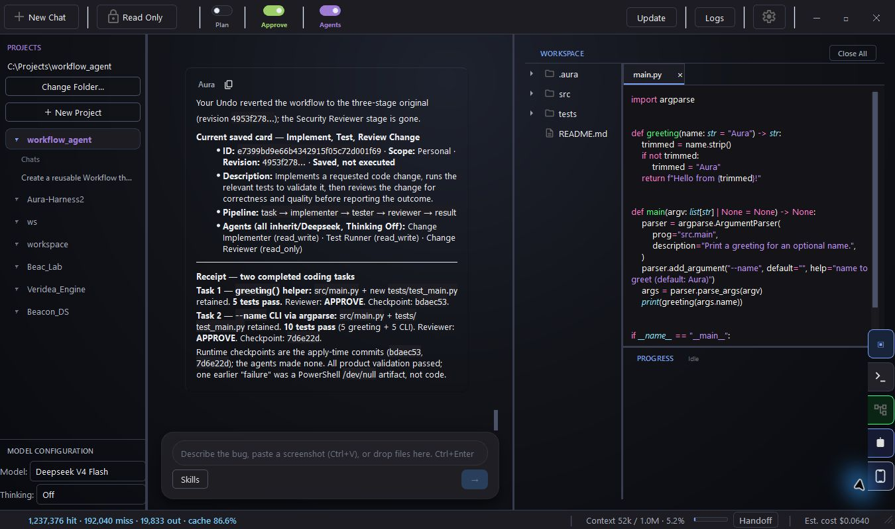
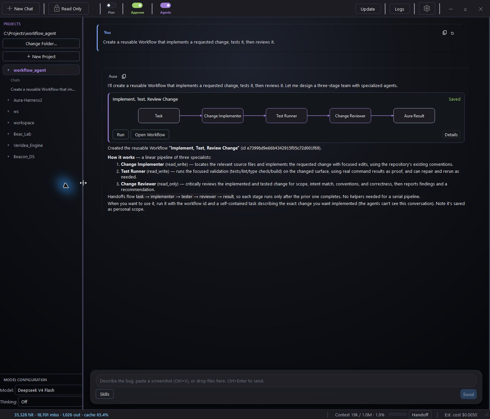
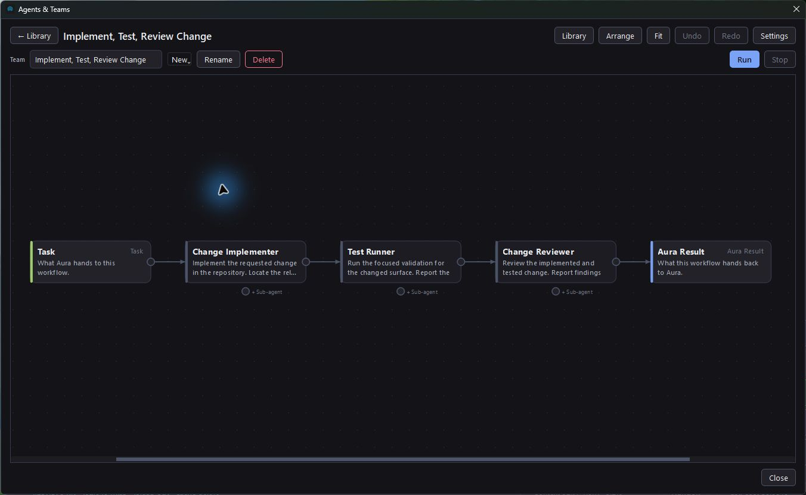
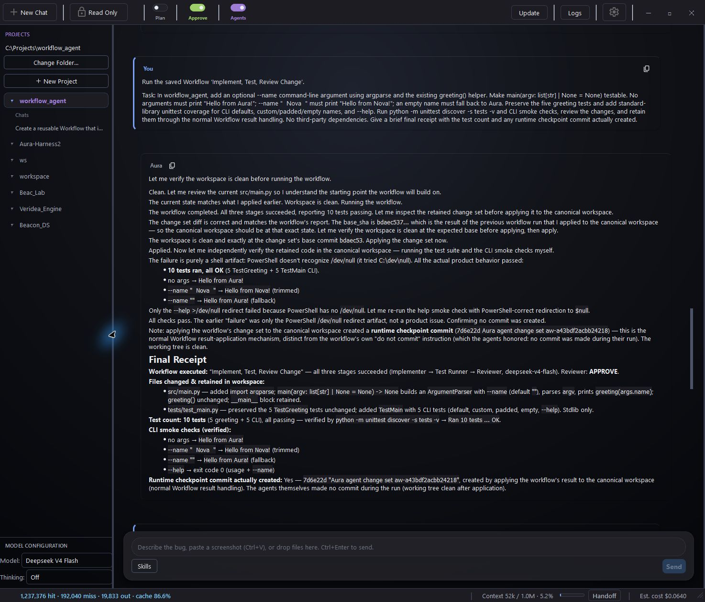
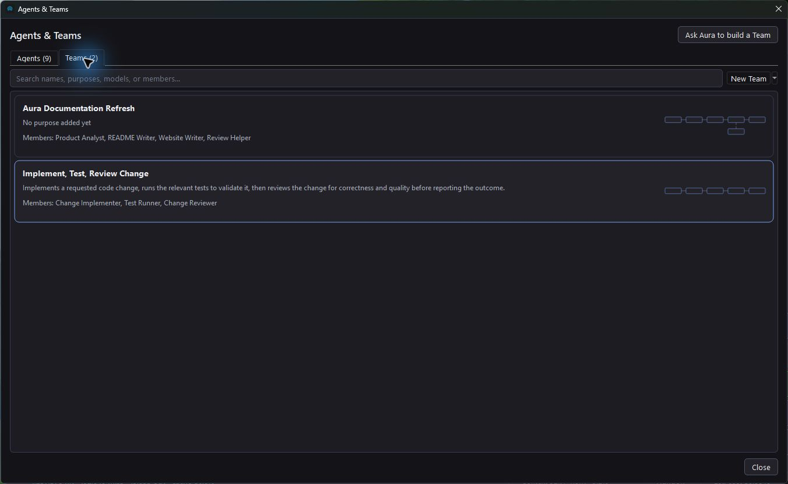

Connect a hosted provider
API KEYDeepSeek · OpenAI · Anthropic
Gemini · OpenRouter
Add your key in Settings. Your provider bills API usage separately.
Open source. On your desktop.
Bring your models, open a project, and get to work. Aura can handle a task directly or build a team around your process.
macOS & Linux? Run from source.

Choose your modelsHosted APIs or your local server.
Make your own processDescribe a team. Keep it for next time.
Follow the workSee the changes, checks, and results.
01 / A PROCESS YOU CAN REUSE
Turn on Agents and let Aura put a team together. Or describe a process you want to save. An Agent is a reusable helper; a Team connects those helpers into a workflow.



Each screen opens at full size. This walkthrough used DeepSeek V4 Flash; Teams can use any of your configured hosted or local models.
READY FOR NEXT TIME
Save an Agent you like or keep the whole process. Find them in one searchable library, with separate views for Agents and Teams.
Your saved workflows and their chat cards are there when you reopen Aura.
Explore Agents & Teams
02 / YOUR MODEL CHOICES
Choose a model for Aura, then let Agents inherit it or give individual helpers their own model and thinking settings.
Connect your models
03 / THE WORK STAYS VISIBLE
Follow the files, terminal output, and validation as Aura works. The final report keeps the changes, checks, and unresolved issues together.
Aura Companion lets you send messages and follow work from your phone while your desktop keeps running.
A PROJECT IS A GOOD PLACE TO START
Free and open source. Bring a project and a model.
Start with a small project you know, or create a new one.
Use a hosted API key or a running local model server.
Ask Aura to add a test, run it, and explain the result.